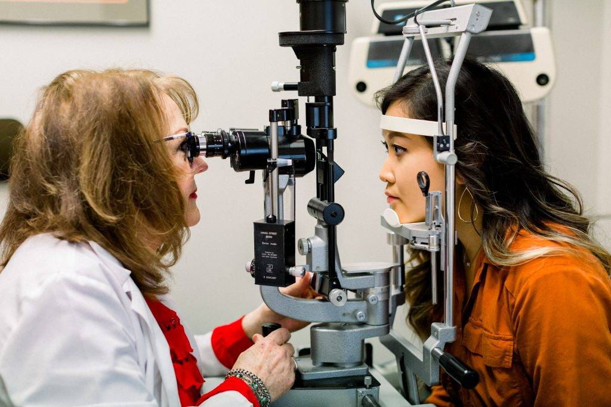

Comprehensive Eye Exams

Comprehensive Eye Exams
Eye Exams For the Whole Family
Routine eye exams are important, regardless of your age or physical health. During a complete eye exam, your eye doctor will not only determine your prescription for eyeglasses or contact lenses, but will also check your eyes for common eye diseases, assess how your eyes work together as a team and evaluate your eyes as an indicator of your overall health.
Book An Eye Exam
Need an Eye Exam to Update Your Prescription?
A comprehensive eye exam includes a number of tests and procedures to examine and evaluate the health of your eyes and the quality of your vision. These tests range from simple ones, like having you read an eye chart, to complex tests, such as using a high-powered lens to examine the health of the tissues inside of your eyes.
Eye care experts recommend you have a complete eye exam every year to assess your risk for potentially damaging eye conditions, as well as to keep on top of any changes in vision you may be experiencing.
Eye Care for Everyone
How Often Do You Need to See the Optometrist, Based on Age?
The AOA recommends an annual eye exam for any patient who wears eyeglasses or contacts. If you don't normally need vision correction, you still need an eye exam every year. Doctors often recommend more frequent eye examinations for people with diabetes, high blood pressure and other disorders, because many diseases can have an impact on vision and eye health.
Since the risk of eye disease continues to increase with advancing age, everyone over the age of 60 should be examined annually.
If you are over 40, it's a good idea to have your eyes examined every one to two years to check for common age-related eye problems such as presbyopia, cataracts and macular degeneration.
Eye Exams for Children
Some experts estimate that approximately 5% to 10% of pre-schoolers and 25% of school-aged children have vision problems. According to the American Optometric Association (AOA), all children should have their eyes examined at 6 months of age, at age 3 and again at the start of school. Children without vision problems or risk factors for eye or vision problems should then continue to have their eyes examined at every year throughout school.
Children with existing vision problems or risk factors should have their eyes examined more frequently. Common risk factors for vision problems include:
premature birth
developmental delays
turned or crossed eyes
family history of eye disease
history of eye injury
other physical illness or disease
The AOA recommends that children who wear eyeglasses or contact lenses should have their eyes examined at least every 12 months or according to their optometrist's instructions. Read more about Pediatric Eye Exams .
Schedule an Eye Doctor's Appointment
Contact our eye care clinic to schedule an eye exam near you, today.
Children's Eye Care
According to experts, 80% of learning is visual, which means that if your child is having difficulty seeing clearly, his or her learning can be affected. This also goes for infants who develop and learn about the world around them through their sense of sight. To ensure that your children have the visual resources they need to grow and develop normally, their eyes and vision should be checked by an eye doctor at certain stages of their development.
Technology - Advanced Eye Care
We use the most up-to-date technology to ensure the best eye care possible. Learn about the different types of tests and equipment you may experience on a visit to our Practice.
What to Expect
Going to the eye doctor? Here’s what to expect, and what to remember.
Home » Eye Care Services » Comprehensive Eye Exams
Eye Exams For the Whole Family
Need an Eye Exam to Update Your Prescription?
Eye Care for Everyone
How Often Do You Need to See the Optometrist, Based on Age?
Eye Exams for Children
Schedule an Eye Doctor's Appointment


More from Eye Shop
Book your exam
Eye Shop - Located at 13130 Memorial Drive, Houston, TX 77079. Phone: 713-977-8464